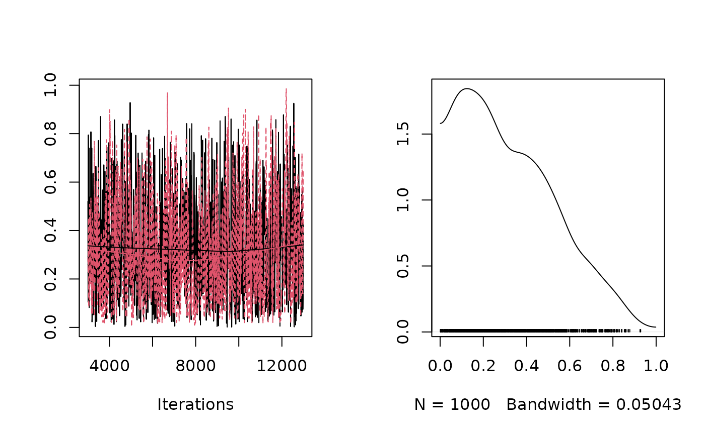

Prior Covariance Matrix for Fixed Effects.
gelman.prior.RdPrior Covariance Matrix for Fixed Effects.
Arguments
- formula
formulafor the fixed effects.- data
- intercept
prior standard deviation for the intercept
- scale
prior standard deviation for regression parameters
- singular.ok
logical: if
FALSElinear dependencies in the fixed effects are removed. ifTRUEthey are left in an estimated, although all information comes form the prior
Author
Jarrod Hadfield j.hadfield@ed.ac.uk
Details
Gelman et al. (2008) suggest that the input variables of a categorical regression are standardised and that the associated regression parameters are assumed independent in the prior. Gelman et al. (2008) recommend a scaled t-distribution with a single degree of freedom (scaled Cauchy) and a scale of 10 for the intercept and 2.5 for the regression parameters. If the degree of freedom is infinity (i.e. a normal distribution) then a prior covariance matrix B$V can be defined for the regression parameters without input standardisation that corresponds to a diagonal prior \({\bf D}\) for the regression parameters had the inputs been standardised. The diagonal elements of \({\bf D}\) are set to scale^2 except the first which is set to intercept^2. With logistic regression \(D=\pi^{2}/3+\sigma^{2}\) gives a prior that is approximately flat on the probability scale, where \(\sigma^{2}\) is the total variance due to the random effects. For probit regression it is \(D=1+\sigma^{2}\).
Examples
dat<-data.frame(y=c(0,0,1,1), x=gl(2,2))
# data with complete separation
#####################
# probit regression #
#####################
prior1<-list(
B=list(mu=c(0,0), V=gelman.prior(~x, data=dat, scale=sqrt(1+1))),
R=list(V=1,fix=1))
m1<-MCMCglmm(y~x, prior=prior1, data=dat, family="ordinal", verbose=FALSE)
c2<-1
p1<-pnorm(m1$Sol[,1]/sqrt(1+c2)) # marginal probability when x=1
#######################
# logistic regression #
#######################
prior2<-list(B=list(mu=c(0,0), V=gelman.prior(~x, data=dat, scale=sqrt(pi^2/3+1))),
R=list(V=1,fix=1))
m2<-MCMCglmm(y~x, prior=prior2, data=dat, family="categorical", verbose=FALSE)
c2 <- (16 * sqrt(3)/(15 * pi))^2
p2<-plogis(m2$Sol[,1]/sqrt(1+c2)) # marginal probability when x=1
plot(mcmc.list(p1,p2))
